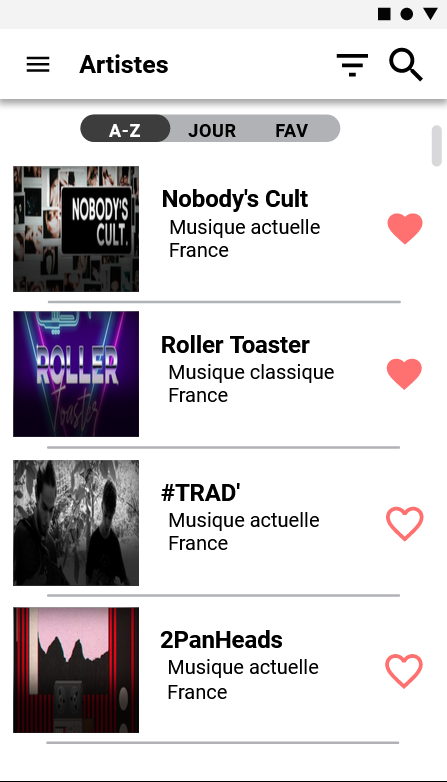
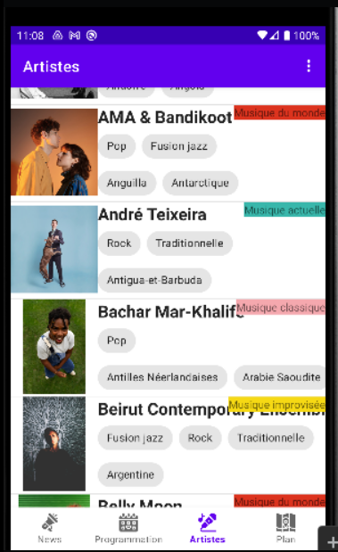

Introduction
Cette SAE était un projet en groupe de 6 personnes ayant comme objectif de développer une application mobile, lié à une base de données via une API (créé lors de la première partie de la SAE)
Ayant été contacté par le FIMU, il nous a été demandé de développer une application mobile.
Cette application permettra aux festivaliers de consulter toutes les informations liées à un groupe ou un artiste présent lors du festival. Elle permettra aussi de consulter une carte interactive permettant de voir tous les stands disponibles durant l'événement ainsi que les scènes sur lesquelles se déroulent les concerts. Si un concert sur une scène et qu'on clique sur cette scène le nom du groupe en concert s'affiche et une clique dessus permet d'aller sur la page des détails de l'artiste. Enfin l'application permettra également de consulter le planning du festival.
Cette SAE permettra donc au festivalier de consulter toutes les informations liées au festival et aux groupes de musique y participant directement depuis leur téléphone.
Travail personnel
Durant cette SAE, les tâches ont été à nouveau réparties de manière à ce que tout le monde participe aux développement de l'application ainsi qu'à la création des maquettes. C'est pourquoi, mes actions lors de ce projet ont été :
- Participation à la création des maquettes de l'application mobile.
- Participation à la mise a jour du trello.
- Liaison de l'API à l'application.
- Développement de plusieurs fragment Kotlin servant à la création des différentes page de l'application.
Langages utilisés
- Kotlin
Compétences
Optimiser des applications en fonction de critères spécifiques : Ce projet m'a permis d'améliorer mes compétences en matière d'optimisation des performances et d'utilisation des ressources, ce qui nous a permis de garantir une expérience utilisatrice fluide et efficace.
Administrer des systèmes informatiques communicants complexes : J'ai eu l'occasion d'utiliser cette compétence grâce à l'implémentation de plusieurs fonctionnalités interactives telles que les boutons utilisés dans le détail des artistes qui nous permettent de consulter leurs réseaux sociaux ou encore de visionner l'une de leurs musiques sur YouTube. Cependant elles ont également été utilisées lors de la création de la carte interactive ou du planning.
Collaborer au sein d'une équipe informatique : J'ai pu utiliser cette compétence et la renforcer grâce aux interactions que nous avons eu au sein de l'équipe de développement afin de faire avancer au mieux le projet, mais également lorsqu'il fallait adapter les attributions des tâches en fonction des compétences et préférences de chacun.
Maquette de l'application
Application mobile
Piste d'optimisation
Optimisation des performances : En fonction des actions faites par un utilisateur sur la page il sera utile d'ajouter des données dans le cash afin de ne pas en permanence interroger l'API et la base de données.
Modification visuelle : Le visuel de l'application est des plus basiques, c'est pourquoi il serait envisageable d'améliorer le visuel de l'application afin de la rendre plus belle.